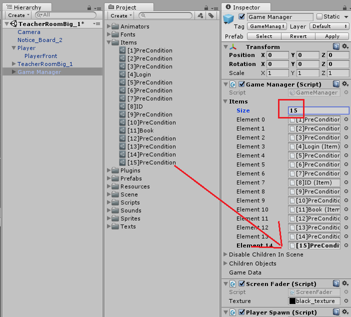
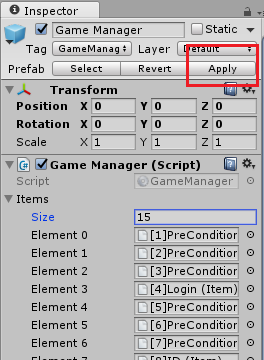
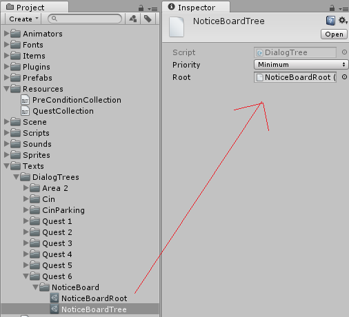
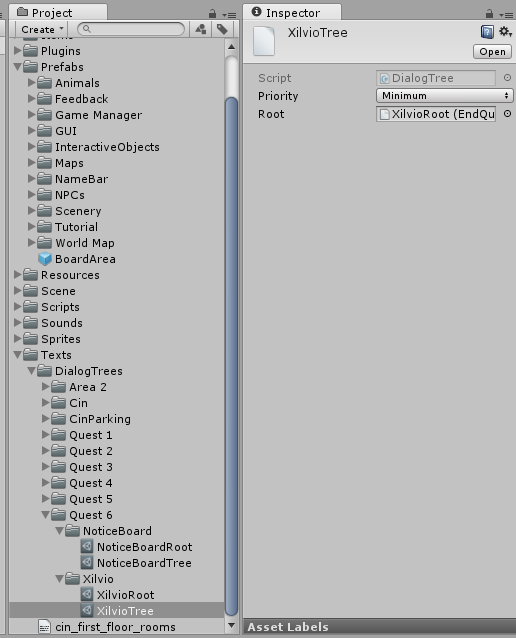
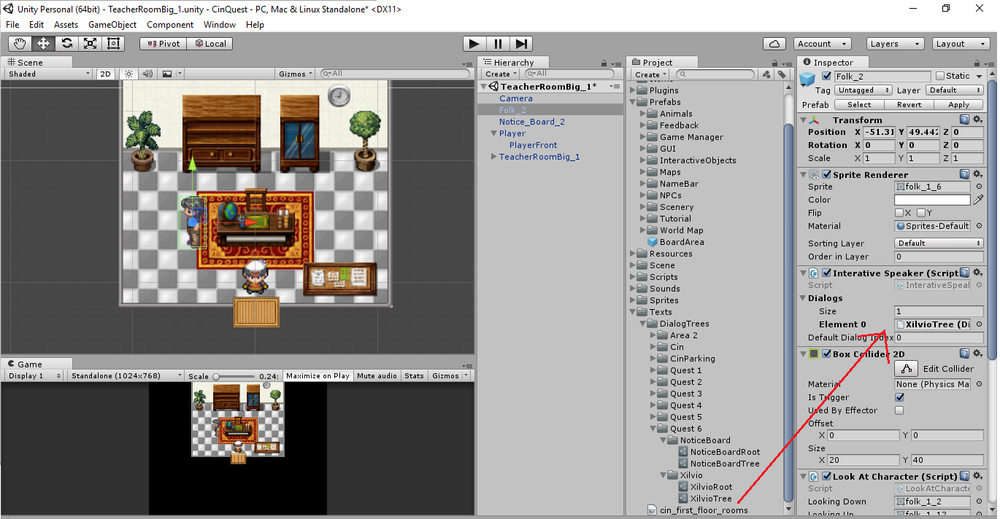
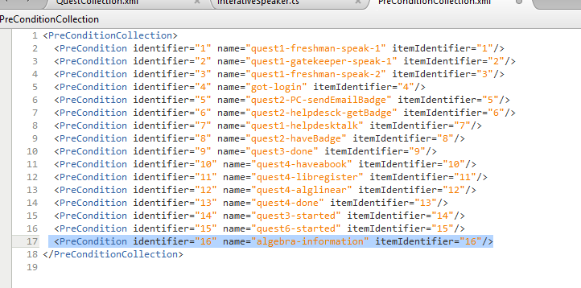
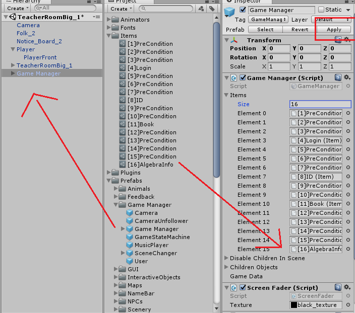

Criação de uma Quest
Esse tutorial será um passo a passo que envolve todos os detalhes envolvidos na programação de uma quest totalmente do zero. Se você o seguir, no fim, terá uma nova quest 100% adicionada ao jogo, pronta para ser jogada do inicio ao fim, além de entender o que é preciso para criar qualquer outra quest que você deseje! Para criar uma quest, vamos também aprender sobre:
Criação de Quest
Nossa nova quest deverá funcionar da seguinte forma: imagine que você é um aluno interessado em pagar Álgebra Anti-Vetorial Curvada para Computação, mas quer saber o que esperar dela antes de decidir se aventurar no siga. Você vê em um quadro de avisos que o professor Xilvio está dando informações sobre a cadeira na sala dele, e depois, deve ir até lá falar com ele para receber um informativo com a ementa da cadeira.
Logo, nossa quest vai envolver, dentre outras coisas:
- Criar uma nova quest e adicioná-la ao jogo
- Criar o quadro de avisos que deverá startar a quest
- Criar o NPC do professor que deverá finalizar a quest e entregar o item ao jogador
- Criar um novo item e adicioná-lo ao jogo
- Criar diálogos e conversas em cada interação entre NPC e jogador
Então, vamos começar?
Primeiro, abra o projeto do jogo no Unity3D e abra uma cena de sala de professor, em Scene >> Cin >> TeacherRooms. Aqui escolhemos a sala "TeacherRoomBig_1":
Para que a quest exista no game, ela precisa ser declarada e criada em XML. Abra o arquivo Resources >> QuestCollection.xml e adicione um novo bloco de quest em xml:
Se estiver tudo OK, você pode rodar o jogo, e apertar Q para abrir a lista de quests e ver a sua nova quest listada!
Ótimo! Agora que sua quest já está criada e inserida no game, precisamos de uma maneira de iniciá-la. Por enquanto, ela já é iniciada assim que o game começa. Mas a intenção é que as quests só sejam startadas quando o jogador interagir com alguma coisa. Geralmente o jogador precisa "pegar" as quests com algum npc.
Para que ela comece bloqueada, vamos voltar para o arquivo QuestCollection.xml e mudar o seu campo Unlocked de true para false. Agora, se você abrir o jogo novamente, e apertar Q, a janela da sua quest deverá informar "Quest Bloqueada", ao invéz de "Quest em Andamento".
Criação de Diálogos
A maneira mais fácil de iniciar uma quest, é através de um NPC capaz de iniciar diálogos. Vamos criar um agora!
Primeiro, abra a pasta Prefabs >> Scenery >> Indoor >> Objects >> Classroom e arraste o prefab NoticeBoard_2 para a cena. Adicione nele dois componentes: um Interative Speaker e um BoxCollider2D marcado como Trigger.
Agora, o nosso NPC de quadro de notícias já tem a capacidade de falar. Mas precisamos definir o que ele deverá falar! Para isso, vamos criar uma Dialog Tree.
Primeiro, crie uma nova pasta para o seu NPC de quadro de notícias. Todos os diálogos dele deverão ficar organizados nela. Os díalogos do jogo estão todos armazenados na pasta Text, então seria bom colocar lá.
Para criar a DialogTree, clique com o botão direito do mouse na pasta NoticeBoard, e siga o caminho Create >> DialogTree
Agora, precisamos de um nó de diálogo para ser a raiz da árvore. No mesmo menu Create, crie um Start Quest Tree Node, e preencha-o como abaixo:
Para o campo Message, você pode colocar algo como: "Você deseja saber mais sobre a cadeira de Álgebra Anti-Vetorial Curvada para Computação? Então fale com Xilvio, o professor logo ali!". Já no campo de Rewards, incluímos um elemento, de ID "15". Isto é uma precondition que vamos utilizar para dizer que o jogador já falou com a notice board. Para que o NPC de Xilvio, que ainda vamos implementar, mostre os diálogos relacionados à esta quest, é preciso, primeiro, falar com a notice board para iniciar a quest. Por isso, Xilvio irá checar se o jogador já possue a precondition de ID "15".
Mas por que "15"?
Estamos utilizando uma precondition como reward, mas nós ainda não criamos ela! Assim como as quests, as preconditions devem ser instanciadas em XML. Vamos abrir o arquivo Resources >> PreConditionCollection.xml. Nele, já existem outras 14 preconditions utilizadas pelas quests 1 a 5, já implementadas no jogo pelo PET-Informática. Sempre que precisarmos bolar preconditions novas para controlar o fluxo de nossas novas quests, basta escolhermos um ID único que não conflite com as que já existem lá! Adicione mais uma linha no arquivo, incluindo nossa nova precondition, como abaixo:
Por fim, precisamos criar o generic item que o jogador receberá de fato ao receber esta precondition, e que será inserido em seu inventario. Na pasta Items clique com o botão direito do mouse, e no menu create, crie um NotShowableItem. Depois, renomeie-o, e preencha o seu campo ID.
Finalmente, com nosso generic item de precondition criado, precisamos adicioná-lo ao jogo. Existe um prefab responsável por armazenar informações sobre o estado do jogo, chamado de Game Manager. Ele possue uma lista de todos os itens que existem dentro do jogo, assim como todas as quests, e todo o conteúdo. Precisamos adicionar nosso novo item à sua lista de itens. Para isso, primeiro coloque o prefab em cena, arrastando o objeto do caminho Prefabs >> GameManger para a cena.
Agora, aumente o tamanho da lista de itens que ele possue e arraste seu novo item para o slot criado:
Por fim, clique em "apply" para aplicar as mudanças ao prefab, e delete o objeto do gamemanager da cena.
Dito isso, podemos voltar para o inspector do Unity. Agora arraste o seu nó de start quest para ser a raiz do objeto de dialog tree criado anteriormente.

Por fim, de volta ao prefab do seu notice board, mude o script Interative Speaker para comportar uma árvore de diálogo, a que você acabou de criar! Basta arrastá-la para o campo correto, após setar o size para 1.

Agora, depois de dar play denovo no jogo, e chegar perto da notice board e apertar Z, sua nova quest terá sido iniciada com sucesso! Uhull!
Vamos então programar o NPC final, que deve encerrar a quest e dar um item como reward ao jogador, Xilvio!
Para isso, vamos pegar um prefab de NPC pronto, na pasta Prefabs >> NPCs >> People >> Static e arrastá-lo para a cena. Esse NPC já possue três scripts envolvidos no seu sistema de diálogos. O Interative Speaker, a BoxCollider2D e o Look At Character. Tudo o que precisamos fazer é criar uma nova árvore de diálogos para ele, preencher ela com as informações de nossa nova quest, e colocá-la no seu script de Interative Speaker
Seguindo os mesmos passos anteriores para a criação de uma árvore de diálogos, vamos criar a árvore, e um nó de End Quest Tree Node, e preenchê-lo da maneira seguinte:
Não esqueça de setar a root da dialog tree para ser este nó!
Agora, de volta ao nosso NPC, vamos substituir a sua árvore de diálogos pela que acabamos de criar!
Ótimo, agora só falta uma coisinha! O nó de diálogo que nós criamos dá como reward ao jogador um generic item de id "16". Precisamos criá-lo!
Primeiro, precisamos criar o seu XML:

Agora, vamos criar o prefab do item real dentro da pasta Items. Dessa vez, porém, queremos que este seja um item que o jogador pode realmente ver no seu inventario, e não apenas uma precondition invisivel! Para isso, ao invés de criar um NotShowAbleItem, vamos dar create em um Item, e preencher suas informações!
Por último, basta adicionar este item novo à lista de itens do game manager. Lembre-se de colocar seu prefab em cena, fazer as alterações, dar apply, e depois remover ele da cena!

Agora, starte o jogo, fale com a notice board, e depois com Xilvio. Você vai concluir a quest com sucesso, e receber um item no seu inventario! Aperta I pra ver ele!